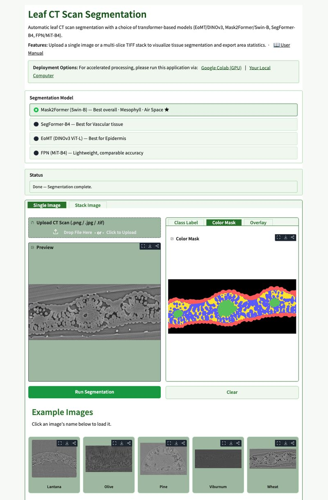
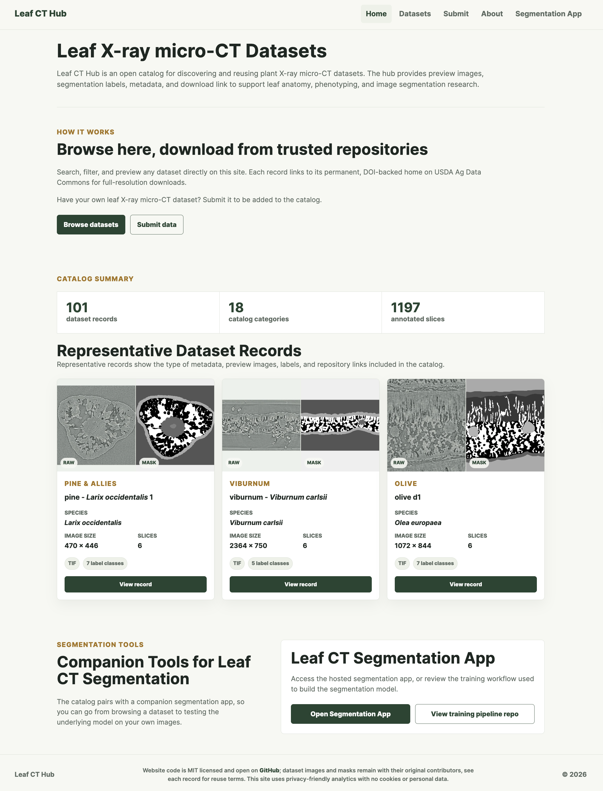
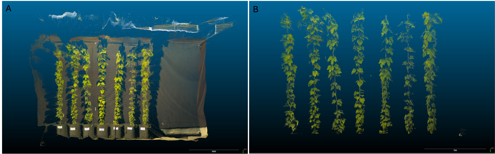
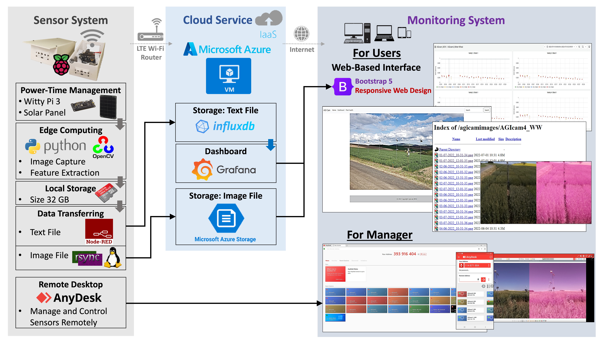
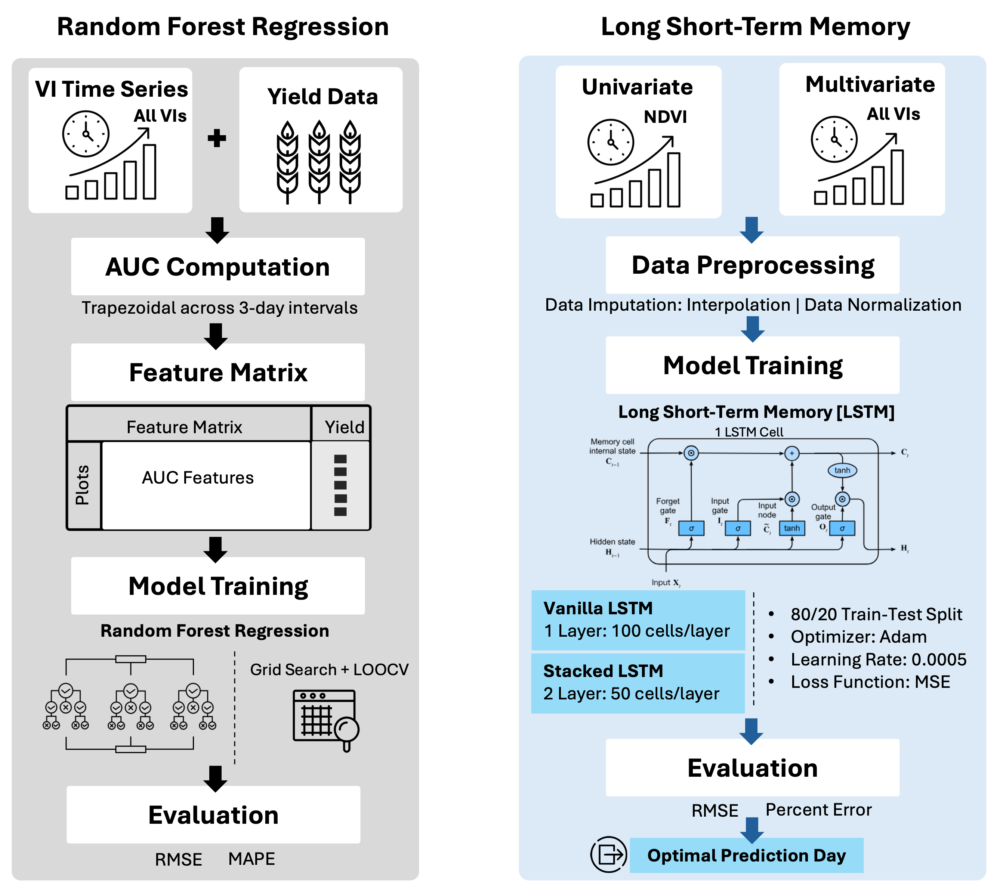
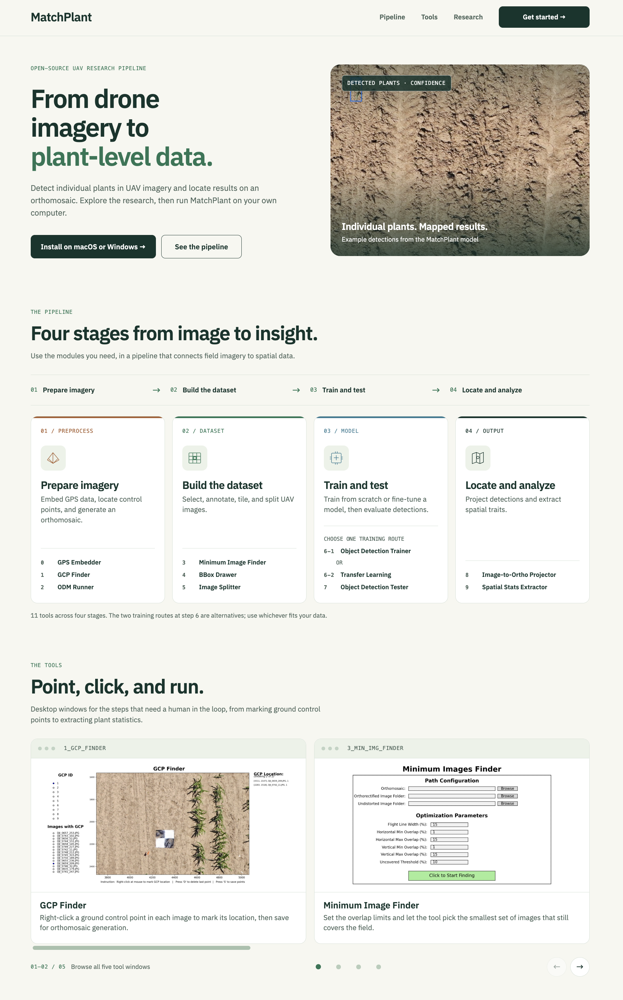
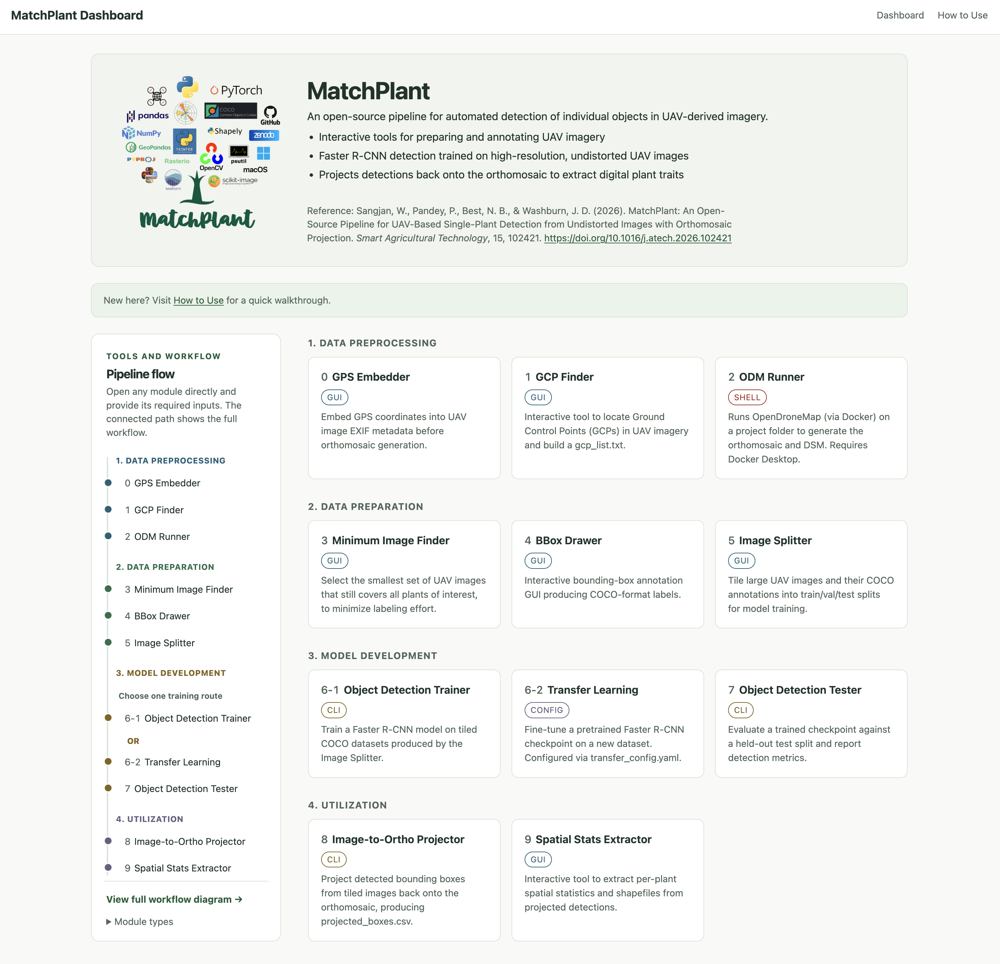

Software & Research Resources
I develop open-source sensing systems, analysis tools, and shared resources for plant phenotyping and digital agriculture.
X-ray microCT
Inside plants and soil
Leaf-CT
Tools and shared data for leaf tissue analysis
Segmentation app
Segment leaf tissues in individual images or TIFF stacks, then download segmentation masks and tissue statistics.
Choose how to run the app
Segmentation app user guideDataset Hub
Explore shared leaf microCT scans, segmentation labels, and dataset metadata.
Training pipeline
Prepare datasets, compare model architectures, and fine-tune segmentation models for your plant species.
Training code & instructions
Segmentation app 
Dataset Hub
Proximal Sensing
Around a plant
3D phenotyping
Plant segmentation and volume estimation from 3D camera data

3D plant point cloud segmentation
IoT Sensing
Across crop rows
AGIcam
IoT cameras for automated field phenotyping

Sensor, cloud, and monitoring system 
Time-series analysis and yield prediction
UAV Imaging
Above a field
MatchPlant
UAV phenotyping pipeline and dashboard for Windows and macOS

MatchPlant: installation guide 
MatchPlant dashboard: tools and workflow